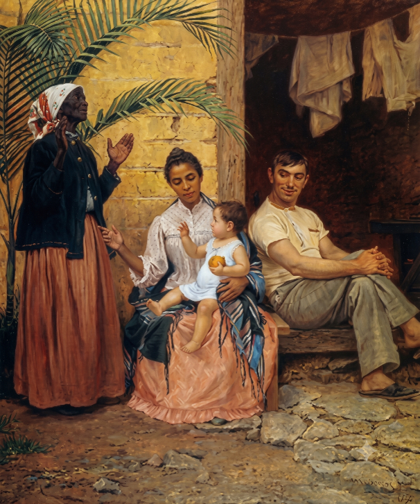

Uma pintura de 1895 e um texto sobre a ideologia do branqueamento no Brasil. Preencha os dados para começar.
Por favor, digite seu nome para continuar.
Respondidas: 0/5
História / 8.º Ano do Ensino Fundamental | (GO-EF08HI18-B) - Escravidão e acesso a TerraInterpretar Pintura Histórica
A Redenção de Cam e o Branqueamento
Observe com atenção a pintura e leia o texto de apoio a seguir. Depois, responda às cinco questões.
NOME:DATA:TURMA:
📖 Para Refletir
Texto de apoio
Trecho de Rosely Gomes Costa
Por outro lado, [...] a mistura de sangue negro com branco e o branqueamento também podiam ser vistos como uma possibilidade de redenção, como exemplifica o quadro de Modesto Brocos y Gomes de 1895 intitulado "A redenção de Can". O quadro representa a avó negra agradecendo aos céus pelo neto branco que está no colo da mãe mulata. Ao lado está o pai, que parece um imigrante de origem ibérica. Segundo a Bíblia, Can, um dos filhos de Noé, recebeu uma maldição: ele e seus descendentes seriam escravos. Pensadores que queriam adaptar a ciência ao texto bíblico apontaram por séculos o povo negro como o antepassado dos povos negros. O pintor, desejando representar o branqueamento da raça, denominou, assim, o quadro de "A redenção de Can".
Referência (ABNT NBR 6023)
COSTA, Rosely Gomes. Mestiçagem, racialização e gênero. Sociologias, Porto Alegre, n. 21, jan./jun. 2009. Acesso em: 27 set. 2018.
A Redenção de Cam
Pintura de Modesto Brocos y Gomez, 1895

A redenção de Cam, pintura a óleo de Modesto Brocos y Gomez, 1895. Note que a avó negra, cuja filha é mestiça, agradece a Deus pelo fato de o seu neto ter nascido branco, isto é, por ter a cor da pele do pai dele. A criança, então, teria vindo redimir a sua família da "marca de Cam", isto é, da cor negra.
1 Observe a cena representada na pintura. Descreva os elementos presentes no quadro (as pessoas, suas posições, expressões e vestimentas) e explique o que cada personagem parece representar dentro da composição.
0 caracteres (mínimo 60)
Comentário do professor
A avó negra aparece de pé, à esquerda, com as mãos erguidas em gesto de agradecimento e roupas simples, associada à origem africana e escravizada da família. No centro, a mãe mestiça está sentada, segurando o bebê branco no colo, com vestimenta mais elegante, representando a geração intermediária de "transição". À direita, o pai, de aparência europeia, aparece sentado e relaxado, representando o elemento branco/imigrante que, segundo a ideologia da época, "purificaria" a linhagem familiar.
2 O texto afirma que a avó negra agradece a Deus por seu neto ter "nascido branco". Explique, com suas palavras, o que essa cena revela sobre a ideia de "branqueamento" que existia na sociedade brasileira no final do século XIX.
0 caracteres (mínimo 60)
Comentário do professor
A cena revela que, no imaginário de parte da elite intelectual e científica da época, ter descendentes de pele mais clara era visto como um "avanço" ou "melhoria" para a família — reflexo do racismo científico então em voga, que associava a branquitude a progresso e civilização, e a negritude a atraso, algo a ser superado ao longo das gerações.
3 Segundo o texto, a lenda bíblica de Cam (filho de Noé) foi usada por pensadores da época para justificar a escravidão dos povos negros. Pesquise ou reflita: por que é problemático usar uma história religiosa para afirmar que um grupo de pessoas deveria ser inferior ou escravizado?
0 caracteres (mínimo 60)
Comentário do professor
É problemático porque distorce um relato religioso para justificar, com aparência de legitimidade moral e científica, a inferiorização e a escravização de um grupo racial inteiro. Trata-se de uma manipulação de crenças para sustentar interesses econômicos e sociais concretos (a manutenção da escravidão e, depois, do racismo), misturando fé e pseudociência de forma que hoje sabemos ser infundada e injusta.
4 A pintura foi feita em 1895, apenas sete anos após a abolição da escravatura no Brasil (1888). Na sua opinião, por que artistas e intelectuais da época se preocupavam em defender a ideia de "branqueamento" da população logo após o fim da escravidão?
0 caracteres (mínimo 60)
Comentário do professor
Após a abolição, parte das elites brasileiras temia perder o controle social sobre a população negra recém-libertada e buscava formas de justificar sua permanência em posição subalterna. A defesa do "branqueamento", associada ao incentivo à imigração europeia, funcionava como um projeto de engenharia racial que buscava, ao mesmo tempo, "modernizar" o país aos moldes europeus e reduzir gradualmente a presença negra na composição da população.
5 Compare a mensagem transmitida pela pintura com os valores de igualdade racial defendidos atualmente na sociedade brasileira. Você acha que ideias parecidas com as representadas no quadro ainda existem hoje, mesmo que de forma disfarçada? Justifique sua resposta com exemplos do cotidiano.
0 caracteres (mínimo 60)
Comentário do professor
Resposta pessoal do(a) aluno(a). Espera-se que reconheça que, embora hoje existam princípios legais e sociais de igualdade racial, formas veladas de valorização da branquitude ainda persistem na sociedade brasileira — por exemplo, na sub-representação de pessoas negras na mídia e na publicidade, em padrões de beleza dominantes, ou em expressões como "bom cabelo"/"cabelo ruim", que remetem, ainda que de modo indireto, à mesma lógica de hierarquia racial presente na pintura.
⚠️ Ainda há campos incompletos (respeite o mínimo de caracteres indicado em cada um). Revise antes de finalizar.
🎉
Atividade concluída!
Suas respostas foram registradas. Os comentários do professor já estão disponíveis abaixo de cada questão para você comparar com o que escreveu.